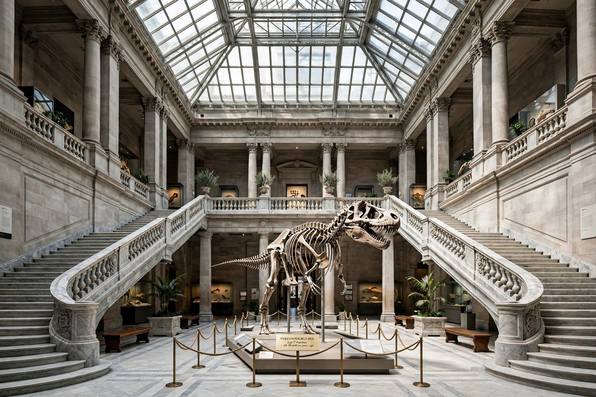

Museum
From Wikipedia, the free encyclopedia

A grand museum atrium: marble staircase, a dinosaur skeleton mounted centre, banners hanging from a glass ceilingA museum is an institution that cares for (conserves) a collection of artefacts and other objects of artistic, cultural, historical or scientific importance, and exhibits them to the public. The word comes from the Greek mouseion, a shrine of the Muses; the famous Mouseion of Alexandria combined library, scholarship and collection.
Modern public museums grew from princely cabinets and Enlightenment collections: the Ashmolean (1683) and the British Museum (1753) were among the first. Today the world's most-visited art museums include the Louvre in Paris, the Metropolitan Museum of Art in New York and the National Gallery in London.
See also
Categories: Arts • Culture